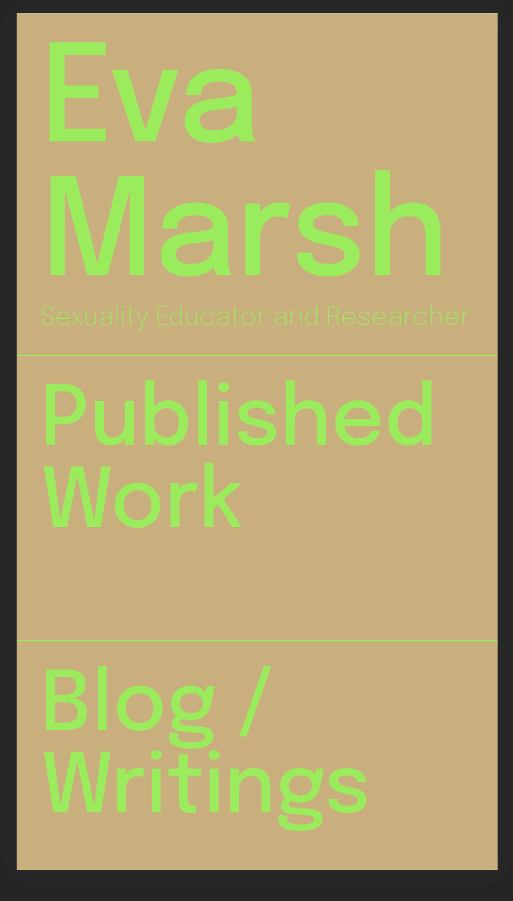

Play: Eva Marsh (website)
I created a website for a friend transitioning from social work to UX research. She requested something at the intersection of soft and tough. I think dark, sumptuous reds and goldenrod yellow combined with a clean, round sans-serif typeface fit the bill. The live site can be found here.
